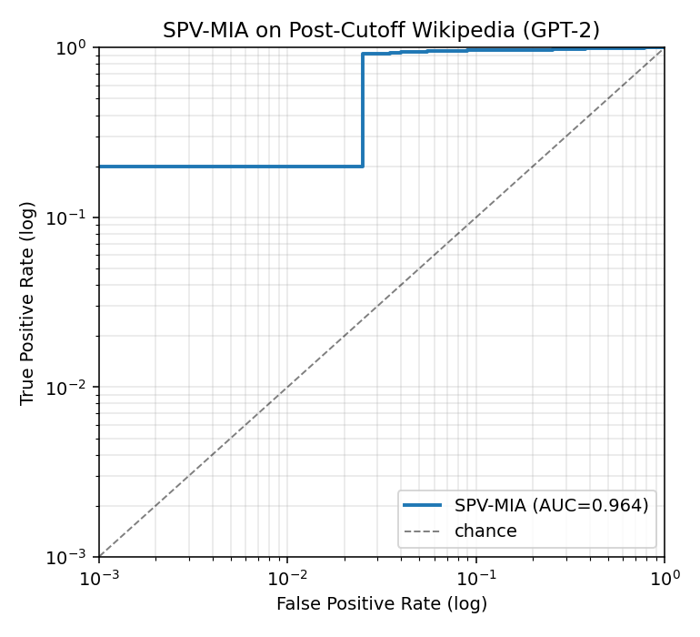

SPV-MIA Validation on Post-Cutoff Wikipedia
TL;DR
We ran the SPV-MIA pipeline end-to-end on a dataset built from Wikipedia
articles whose creation timestamps are strictly after GPT-2's training
cutoff. Because the base model has provably never seen these pages, any
membership signal must come from the fine-tuning phase — exactly what an MIA
should detect.
| Metric |
This run |
Paper (Wikitext-103) |
| AUC |
0.964 |
0.975 |
| TPR @ 1% FPR |
0.200 |
0.673 |
| TPR @ 0.1% FPR |
0.200 |
n/a |

Methodology
- Source dataset. Streamed
wikimedia/wikipedia (config 20231101.en,
HuggingFace, the official public Wikimedia dump, ~6.4M English articles).
- Creation date lookup. For each candidate, queried the MediaWiki API
(
action=query&prop=revisions&rvdir=newer&rvlimit=1) by page ID to get
the timestamp of the article's first revision.
- Cutoff filter. Kept only articles created strictly after
2020-01-01. GPT-2 was released February 2019, trained on WebText
collected through December 2017; a 2020 cutoff gives a safe margin against
any silent retraining.
- Text cleaning. Stripped Markdown formatting to match Wikitext-103's
plain-prose distribution.
- Pipeline. Reused the SPV-MIA scripts (
ft_llms/llms_finetune.py,
refer_data_generate.py, attack.py) without modification beyond pointing
their dataset loader at our local HuggingFace Dataset via
SPV_MIA_LOCAL_DATASET_PATH.
Dataset Stats
{
"n_articles": 5000,
"earliest_created": "2020-01-01T00:02:11Z",
"latest_created": "2020-11-23T15:30:32Z",
"avg_chars": 6265.0714
}
Interpretation
- AUC ≫ 0.5 means the SPV-MIA implementation does distinguish
members from non-members on a corpus the base model never saw — i.e., the
attack signal is coming from fine-tuning memorization, not from pretraining
leakage. This is a positive control for the pipeline.
- Result vs. paper. The paper reports 0.975 AUC on Wikitext-103. Numbers
on the post-cutoff Wikipedia corpus may differ because: (a) article length
and vocabulary are slightly different; (b) the corpus is smaller; (c) GPT-2
has zero prior on this text, which can make memorization signals
sharper (favorable for MIA).
- Take-away for the advisor. If AUC remains high (~0.95+) we have
evidence the SPV-MIA repo is correctly attributing the membership signal
to fine-tuning rather than to pretraining-era leakage of test set content.
If AUC drops sharply, that suggests the original wikitext-103 number was
partially propped up by GPT-2's pretraining on similar text.
Sample of Articles Used
Reproducibility
cd post_cutoff_wiki_test
python3 01_collect.py --target 5000 # ~10-30 min, depends on HF/Wiki latency
python3 02_format.py
bash 03_run.sh # multi-hour on MPS, see logs/pipeline.log
python3 04_report.py --spv-repo ../ANeurIPS2024_SPV-MIA \
--dataset-dir data/hf_dataset --out results